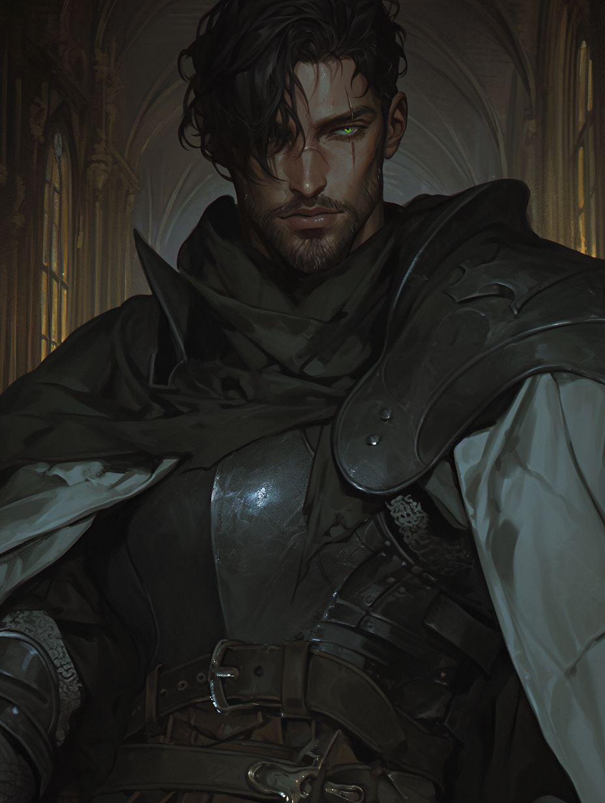
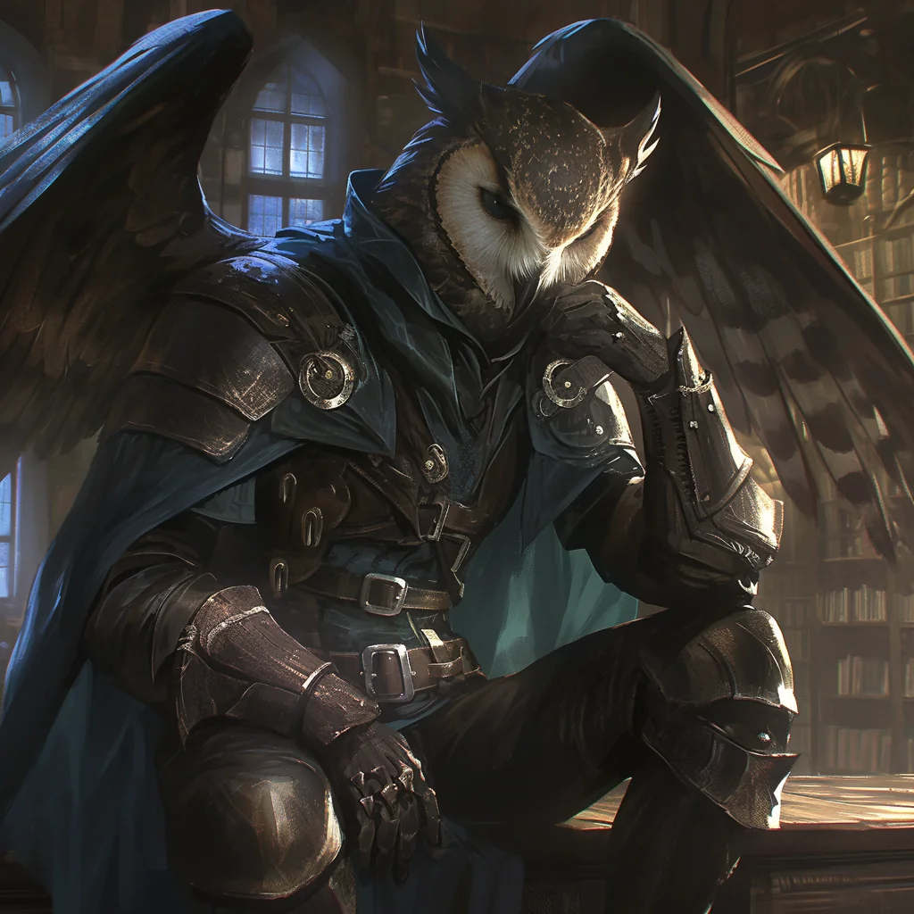
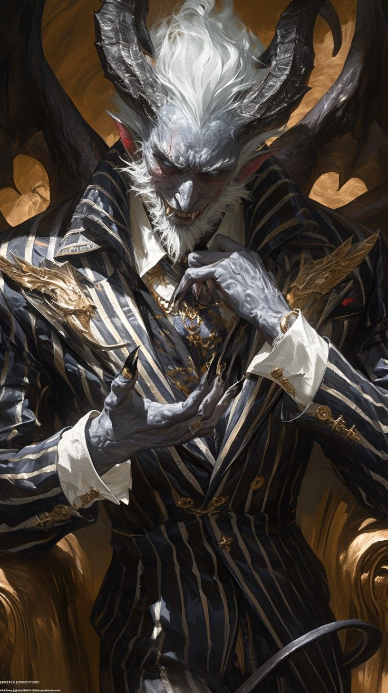
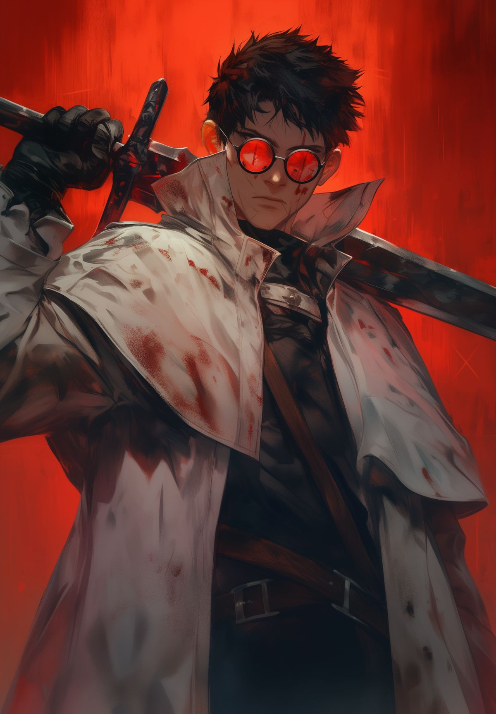

Karakter Müziği
CV-MÜZ · Campaign V
>_ Şu An Çalıyor
— Seçilmedi —
KARAKTER MÜZİĞİ
0:00
0:00
10

Tuğberk GÖKTEPE tarafından canlandırılmış ve oynanmıştır. Tuğberk'in ilk karakteridir. Aldric Thane Castellan, Engizisyon'un askeri omurgasını oluşturan dört büyük Lejyon Ailesi'nden biri olan Mithralius hanesinin sancaktarlığını yapan köklü Castellan ailesine doğdu. Annesi dey Vernitillon Pouiffet, Ruxphrey ailesinin zarafetini ve politik keskinliğini taşıyan asil bir kadındı. Babası Colborn Churdis Castellan ise Tanrı Savaşları'ndan kalma bir gaziydi; şanı yürüyen bir Paladin, son savaşında aldığı ağır bir darbe yüzünden bacağını kaybetmiş ve sahadan emekli olmak zorunda kalmıştı. Thane'in varlığı, bir bakıma bu zorunlu emekliliğin ve devam etmesi gereken bir soyun meyvesiydi.
Evlerinin ana salonunda şöminenin üzerinde asılı duran, babasının savaşta kullandığı devasa kara çelikten bir Greatsword vardı: "Hüküm." Babası artık onu kaldıramıyor olsa da o kılıç Thane için ulaşılması gereken nihai hedefti. Daha 5 yaşındayken, babasının eski dostu "Yemin Bağlayıcı" lakabıyla bilinen Dantallion, Thane'in mentoru oldu. Dantallion, bir taş ustasının oğluydu ve asaletini kanıyla değil, kırdığı kemiklerle kazanmış sert bir Engizisyoncuydu. Thane yalnız değildi; Külmızrağı'nın alt hanelerinden Lockhill ailesinin en küçük oğlu Vexor Lockhill de onunla birlikte yetişiyordu. Bu ikilinin eş zamanlı eğitilmesi, onları yıllar içinde birbirini tamamlayan bir silaha dönüştürecekti.
10 yaşındayken Dantallion onu ve Vexor'u kışlanenin revirine götürdü. Karnına saplanan paslı bir mızrak yüzünden can çekişen genç bir askerin başucunda durdu Thane. Vexor gözyaşlarına hakim olamazken Thane korkmadı, sadece izledi. O gün Dantallion elini omzuna koyup şunu demişti: "Ölüm bir son değil, sadece bir sessizliktir. Hazırlıklı olan için korkulacak bir şey değildir." Bu an, Thane'in zihnine kazınan, ölümü sıradanlaştıran ilk dersti.
11 yaşında Yeryüzü Tapınağı'nın kapılarını aralayan Thane, bembeyaz bir tunikle sunağa yürüdü. Başrahip ona törensel gümüş işlemeli bir kılıç uzattığında sesi heyecandan titriyordu. Gözlerindeki parıltı vitraylardan gelen ışıkla yarışıyordu. Dürüstlük, cesaret, merhamet ve görev; bu dört yemini saf bir idealizmin zirvesinde, yüreği umutla dolu bir çocuğun ağzından döküldü. O an gerçekten de bir kahraman olacağına inanıyordu.
Ama Engizisyon disiplininde hiçbir şey sadece yeminle sunulmazdı. 12 yaşında ilk görevine gönderildi. Komutanı Barles'ın ani bir pusuyla katledilmesi, gencin zihnindeki o revir sahnesini canlandırdı: "Ölüm bir sessizliktir." Panik yapmadan buz gibi bir odaklanmayla haydut liderini ortadan ikiye böldü. Komutanının ölümüyle sonuçlanan bu ilk görevde tüm beklentilerin aksine hiçbir travma izi bırakmamıştı Thane'de. Engizisyon bunu yakından takip etmeye başladı.
Sonraki yıllarda 26. Katledenler Bölüğü'nde irili ufaklı görevlere katıldı. Vexor ile zaman zaman birlikte çalışıyorlar, aralarındaki o biricik rekabet ikisini de yaşıtlarından öne taşıyordu. Tam yetkili Paladin olacakları gün yaklaşırken, önceki gece Vexor ile o masum tavernada içtiler. Kadehlerini kaldırıp hayallerini, umutlarını paylaştılar. O gece geç saatlerde şehir surlarına doğru yürürlerken ormanlıktan inanılmaz çığlık sesleri yükseldi.
Çığlığın kaynağına vardıklarında gördüklerine inanamadılar. 4 metre boyunda, gerçekliğin dokusuna aykırı bir Aberrant; bir kasabalı kızı parçalıyordu. Vexor atıldı ve yaratığın tek bir hamlesiyle sağ bacağını kaybetti. Thane ise kıpırdayamıyordu. Silahını bile eline alamamıştı. Vexor "Kaç buradan, hemen kaç!" diye bağırıyordu. Tam o an son anda gelen Paladin Othmar Farley'in devriyesi yaratığı ağır biçimde yaraladı. Yaratık son gücüyle Vexor'u sol bacağından tutup ormana fırlattı. Kardeşi artık yoktu.
Thane dişlerini öyle sıktı ki ufak parçalar kırıldı. Ellerini yumruk yaparak toprağı döverek "Neden, Neden, NEDEN KIPIRDAYAMADIM!" diye bağırdı. Sonra orada bayıldı.
Ertesi sabah Yeryüzü Tapınağı'na tekrar girdiğinde 11 yaşındaki o çocuktan eser yoktu. Dantallion tören kılıcını uzattığında Thane onu bir emanet gibi değil, bir infaz aleti gibi kavradı. Kılıcı mermer sunağa kıvılcımlar saçarak sapladı ve yeni yeminini gürledi:
"Büyük Kötülükle Savaş. Küçük suçlularla uğraşmak başkalarının işi. Benim öfkem, masumları ezen kozmik sapkınlıklara ayrılmıştır. Zalimlere Merhamet Yok. Tereddüt zayıflıktır; ve ben zayıflığımı o ormanda gömdüm. Ne Pahasına Olursa Olsun, adaleti sağlamak için gerekirse kendi ruhumdan parça veririm."
O artık intikam ateşiyle dövülmüş bir Vengeance Paladin'di. 16. Lağımcılar Bölüğü'ne katıldı; odağı karanlık tehditler ve Dünya dışından gelebilecek tehlikelere karşı yeryüzünü korumaktı.
Kırmızı Mürekkep İsyanı patlak verdiğinde Thane henüz yeniydi. Beyaz Şehir'de kritik devriye noktalarında görev aldı. Bir operasyonda 12 kişilik birliği ile mühimmat odasına girdiğinde pusuya düşürüldüler; komutan dahil yedi kişi oracıkta katledildi. Thane anında bir karşı saldırı planı kurguladı. Misty Step ile kendini üst kata ışınlayarak büyücüleri tek tek temizledi. Bu pusudan sağ çıkma becerisi Engizisyon'un dikkatini çekti ve onu daha yakından takip etmeye başladılar.
İsyandan üç ay sonra Kül ve Kemiklerin Yemini başladı. Kuzey ve Cüce sınır topraklarında ezilen yerel kabilelerin kurduğu Yemin Konseyi, dağların avantajını kullanarak gerilla taktikleriyle Engizisyon'a yanıt veriyordu. Thane sekiz kişilik bir ekiple katıldı. İlk yılı çeşitli küçük çatışmalarla geçirirken ikinci yılında Sessiz Uçurum garnizonuna konuşlandırıldı. İşte burada, bir gecenin baskınında kurtardığı kadın diplomat Cecilia ile ilk kez tanıştı. Garnizonunu koruyamamanın hayal kırıklığıyla ona samimi bir özür sunduğunda Cecilia şaşırmıştı. Kuzey'den Beyaz Şehir'e dönerken ikisi arasında alçak sesli, hesaplı ama gerçek bir dostluk filizlendi.
En uzun ve en sancılı süreç Kırık Zincirler ve Kara Hasat isyanıydı; beş yıl sürecekti. İmparatorluğun tahıl ambarlarına el koyması ve ekmek çalan bir Tiefling kadının meydanda yakılması bu yangını tutuşturmuştu. Thane kırk kişilik birliğiyle sayısız müdahalede bulundu. Son Direniş Kanyonu'ndaki pusu ise en kritik andı: iki druid, örs ve çekiç taktiğiyle birliği tuzağa düşürmüştü. Aşağıdan biri dikenleri ve kökleri kullanarak askerleri sabitliyor, yukarıdan diğeri yıldırım yağdırıyordu. Thane Misty Step ile yıldırım çağıran druidin hemen arkasına ışınlandı; Divine Smite ile güçlendirilmiş bir darbe indirerek konsantrasyonunu kırdı. Ardından bilinçsizleşen bedeni kaldırıp aşağıdaki diğer druidin üzerine fırlattı. İki büyü de bozuldu, yol açıldı, birlik geçebildi.
İsyan Engizisyon'un "Toprak Laneti" ritüeliyle sona erdi; aç kalan halk isyancı liderlerini elleriyle teslim etti. Kazdıkları mezarlara diri diri gömülen isyancıların toprağı "Tuzlu Mezarlar" adıyla bir ibret anıtına dönüştürüldü. Thane artık hissizleşmişti. Aklında yalnızca yemini ve öldürmesi gereken Aberrantlar vardı.
Sonraki bir buçuk yılda 16. Lağımcılar'a bu kez Komutan olarak katıldı; sayısız Aberrant katletti. Cecilia ile ara ara görüşmeye devam ettiler. Bir gün özel bir görev çağrısı geldi; üç kişilik seçkin bir ekiple gidecekti, dönüp dönemeyeceği belirsizdi. Cecilia'yı karanlıkta bırakmak istemedi, vedalaştılar.
Dilsizler Mağarası'na girdiklerinde zihinlerdeki gürültü dayanılmaz bir hal aldı. Mağaranın kalbinde beliren Minor Eldritch Avatar karşısında Thane ilk kez Vexor'u kaybettiği geceyi yeniden yaşadı. Yeniden donacak mıydı? Hayır. Bağırabildiği kadar yüksek bağırdı, mağarayı inletti ve "Başlıyoruz kardeşlerim!" diye haykırdı. Ekibinden ikisi düştü, biri banishment'a maruz kaldı, bir diğeri delirerek intihar etti. Tek başına kalan Thane son gücüyle kritik bir darbe indirdi; sarı ve turuncu alevlerden oluşan bir yıldırım mağarayı gündüze çevirdi. Avatar çığlıklar atarak karanlık bir deliğin içine çekildi. Thane yere yığıldı. Bilinci kapanırken gördüğü son şey, önünde duran beyaz bir portaldan çıkan ve kendisine bakan kendisiydi.
Gözlerini açtığında rehabilitasyon merkezindeydi. Babası korku dolu gözlerle yanı başındaydı. Yaklaşık bir hafta baygın kalmıştı. Ölen arkadaşlarının yasını tutmak istediğini söyledi ve dinlenmeye çekildi. Haftalarca Cecilia ziyarete geldi, sonra gelişleri seyrekleşti. İçinde bir şeylerin yanlış gittiğini hisseden Thane, bu hissin ne anlama geldiğini tam çözemiyordu.
Z.G.S. 26 NOVA 1 sabahı, Yeryüzü Tapınağı'nda bir terfi töreni bekliyordu Thane'i. Tapınak içinde binlerce kandilin ışığı Yüksek Engizisyoncu pelerinlerinde kırılıyordu. Yüksek Engizisyoncu Peder Pearcail ellerinde Épée Solaire'i tutuyordu; "Güneşin Kılıcı" anlamına gelen bu silah, Thane'in yükselmesi için makul görülmüştü.
Kılıcın kabzasını kavradığı anda gerçeklik cam gibi çatladı. Önce huzur veren bir ışık, uhrevi bir müzik. Sonra Thane iradeyle o göz kamaştırıcı illüzyonun ardındaki çarpık titreşimi hissetti. Parıltının gerisinde saklanan şey; çok kollu, ıslak ve morumsu karanlıkla kaplı, binlerce fısıltının konuştuğu, rehabilitasyona girmesine neden olan o Minor Avatar'ı andıran bir ucubeydi. Gözünü kırpmadan Başrahip'e eğildi. "İnancım kılıcım, iradem ise ışığınızdır," fısıldadı ve törenin bitmesini bekledi.
Sonraki günlerde Yüksek Engizisyoncuların meşe masasındaydı artık. Her konuşulan strateji, her alınan karar kulaklarında bir yalanın yankısıydı. Tam bu zihinsel çöküşün eşiğindeyken masaya bir emir düştü: Cecilia için yakalama emri. Engizisyon onun en yakın dostunu ölüme mahkûm ediyordu.
O gece ağır, ter içinde bir uykuya daldı. Rüyasında yıldızların bile söndüğü bir boşlukta beliren figür ne bir melek ne de bir Aberrant'tı. Bu, ██████ adında bir şeytandı. Aldric'e Aydınlık Olan'ın gerçek yüzünü gösterdi, Cecilia'nın nerede saklandığını söyledi ve bir anlaşma teklif etti: ruhunu ve anılarını açık bir kitap gibi paylaşacak, her öldürdüğü Engizisyoncu için belirli bir ritüel yapacaktı. Aldric uzun süre direndi. Ama Cecilia'yı kurtarmanın başka yolu yoktu. Şeytanın karşısında dizlerinin üstüne çökmeden, gözlerinin içine bakarak yeni bir yemin fısıldadı. Anlaşma mühürlendiğinde ██████'ın sesi onu uyardı: "Engizisyon artık seni de bir av olarak görüyor."
Uykudan sıçrayarak kalktı. Zırhını kuşandı ve karanlığın içine ilk adımını attı. Harabe şapelde Cecilia'yı buldu; yanında gizlenmiş bir suikastçi de vardı. Épée Solaire'i Cecilia'ya doğrultup sol gözünü kırptıktan sonra kılıcı suikastçinin boynuna savurdu. ██████ ile yaptığı anlaşmanın ilk ritüelini tamamladı. Cecilia'nın hazırlıklarıyla birlikte Frosty Passage yakınlarına ışınlandılar.
Kuzeye doğru ilerledikleri günler birbirinin içine karışmıştı. Paramparça bir ayın altında, zifiri karanlıkta üç kurt adamla karşılaştılar. Dakikalar süren savaşın ardından her ikisi de yaralı bir mağaraya sığındı. Ateşin ışığında Thane konuşmaya başladı; Vexor'u, kaybettiklerini, yüklerini anlattı. Cecilia sessizce dinledi ve yaralarını sardı.
Yıllar sonra ilk kez Thane yalnız olmadığını hissetti. Artık bir yoldaşı vardı. Cecilia uyuya kaldıktan sonra sırt üstü uzanıp karanlığa baktı. Ona ne hissettiğini bilemiyordu; on iki yılın ardından Vexor'u andıran tek kişiydi bu kadın. Kafası karışıktı. Ama ne hissederse hissetsin, bir şey netti: sonu ne olursa olsun, birlikte mücadele edebileceği biri vardı artık.






.jpg)
